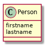

Exercices sur l'héritage
Table des matières
1 Objectifs
Pratiquer la redéfinition de méthodes et l'implémentation d'interfaces.
2 Préliminaires
Créer une classe Person :

Avec un constructeur qui permette d'initialiser les attributs.
3 Permettre les tests d'égalité entre instances
3.1 Définir une méthode equals(Person p)
On pourrait être tenté de définir une méthode public boolean equals(Person p).
Définir une telle méthode et essayer de l'utiliser :
Person p1 = new Person ("Bernard", "h"); Person p2 = new Person("Bernard", "h"); System.out.println(p1.equals(p2));
Puis comme ceci :
Object p1 = new Person ("Bernard", "h"); Object p2 = new Person("Bernard", "h"); System.out.println(p1.equals(p2));
Expliquer le deuxième résultat.
On a voulu redéfinir la méthode equals
définie dans la classe Object. On peut indiquer cette intention de
redéfinir une méthode avec l'annotation @Override. Qualifier la
méthode public boolean equals(Person p) avec
l'annotation @Override : que se passe-t-il ?
3.2 Définir une méthode equals(Object o)
Il faut se persuader que le deuxième cas de figure (lorsque l'on
manipule un objet de classe Person à travers
une référence de classe Object qui est la
plus utile ! En effet, à chaque fois qu'une classe déjà existante (par
exemple les structures de données de la bibliothèque standard Java
(e.g. ArrayList ou TreeSet), elle ne peut évidemment pas avoir été écrite ou même
compilée en prenant en compte notre nouvelle classe. On doit donc
pouvoir gérer ce cas de figure, en redéfinissant vraiment (et non en
surchargeant) la méthode equals définie dans la classe Object.
Redéfinir la méthode public boolean equals(Object o). Vérifier que le code suivant donne cette fois-ci le
résultat attendu :
Object p1 = new Person ("Bernard", "h"); Object p2 = new Person("Bernard", "h"); System.out.println(p1.equals(p2));
4 Implémentation d'interface
On voudra désormais en plus être capable d'ordonner des instances de
notre classe Person (ordre alphabétique sur
lastname puis sur firstname en cas d'égalité), par exemple pour pouvoir exécuter
le code suivant :
TreeSet<Person> group= new TreeSet<Person>(); group.add(new Person("Bernard","H")); group.add(new Person("Jules", "L")); System.out.println(group);
Quel est le message d'erreur à l'exécution ?
4.1 Implémentation de l'interface Comparable
Implémenter l'interface Comparable Comparable avec une méthode
public int compareTo(Object o).
4.2 Implémentation de l'interface Comparable<Person>
Implémenter l'interface Comparable<Person>. Quels sont les avantages par rapport à l'implémentation précédente ?